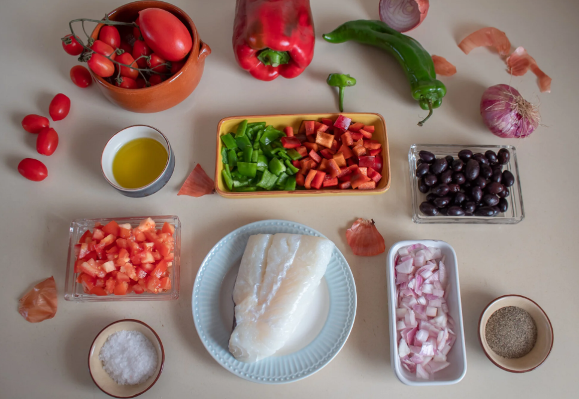
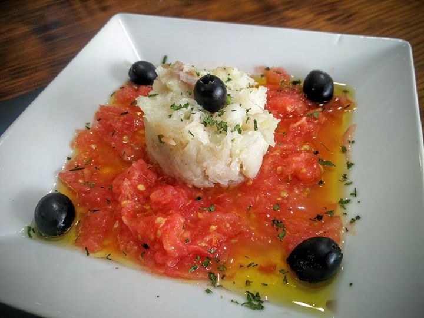
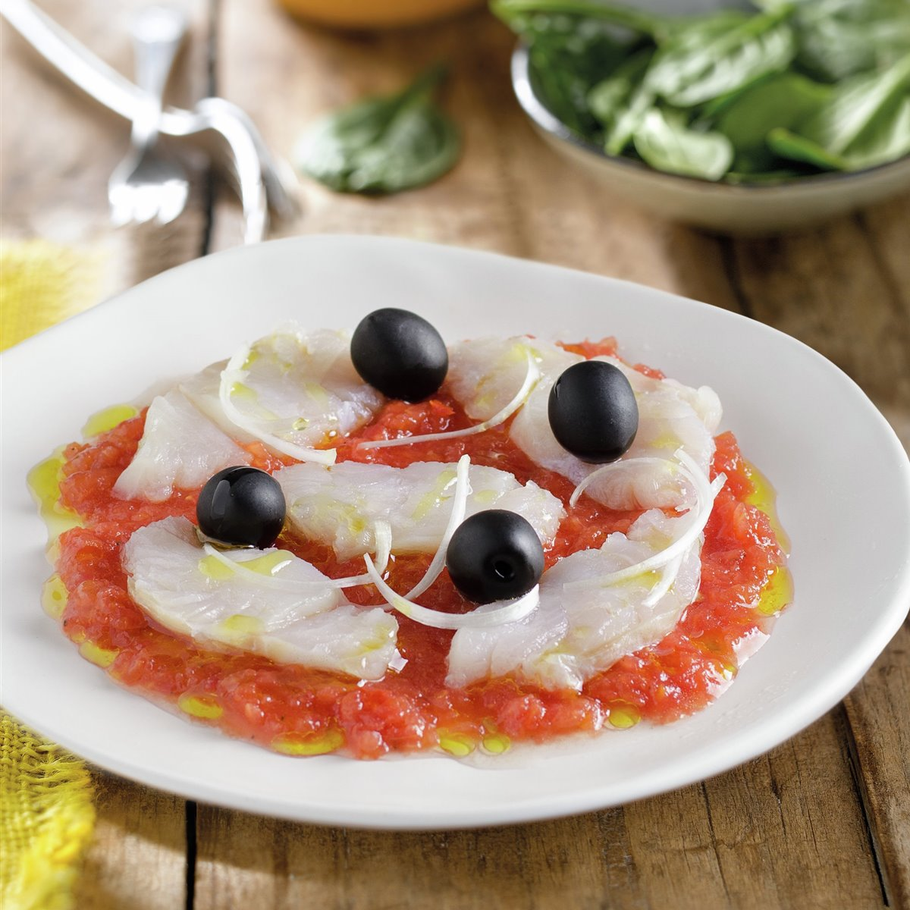
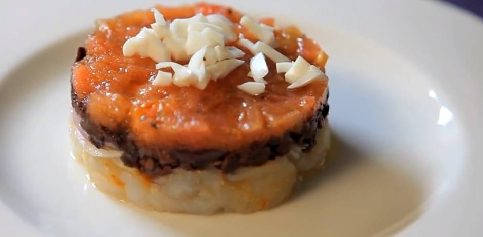
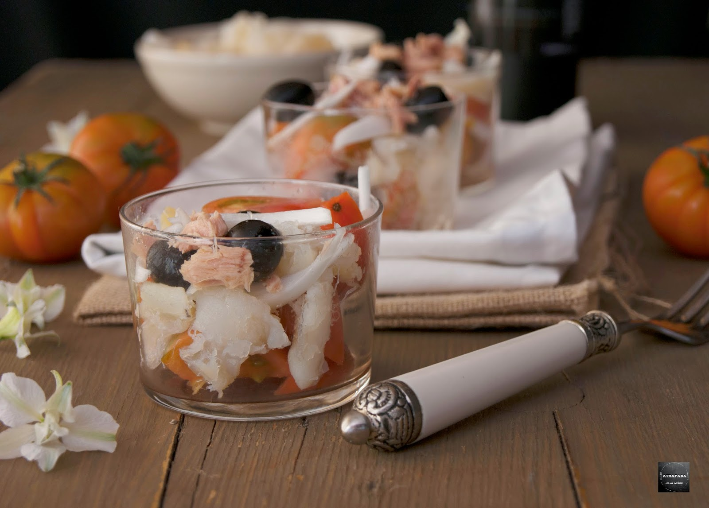

Esqueixada
L’esqueixada de bacallà és una de les receptes més fàcils d’elaborar. Un plat que permet gaudir de tot el sabor del bacallà curat tradicional d’Islàndia d’una manera fresca i lleugera, a la vegada que deliciosa.
De fet, el seu origen és antiquíssim. Diuen que allà pel 1800 els pagesos ja menjaven el bacalllà d’aquesta manera. I ho feien a qualsevol hora del dia, però principalment per berenar a l’horta, ja que els ingredients utilitzats eren els de la collita i segons l’època de l’any.
Avui dia, l’esqueixada és un plat nutritiu, saludable i boníssim. I tan fàcil de preparar!
Ingredients:
- 300 g de bacallà
- 1 ceba tendra mitjana picada
- 1/2 pebrot vermell
- 1 pebrot verd
- 4 o 6 tomàquets cherry
- Olives negres
- Oli d’oliva verge extra

Passos a seguir:
- Esqueixar el bacallà remullat en un bol.
- Netejar i tallar les verdures en dauets.
- Picar la ceba.
- Afegir les verdures al bol del bacallà.
- Afegir les olives negres i barrejar bé.
- Amanir amb oli d’oliva verge extra.
- Tallar per la meitat els tomàquets i afegir-los a l’esqueixada (es poden afegir abans o després i barrejar amb l’oli).
- Servir l’esqueixada de bacallà un pèl freda. I a gaudir!
Possibles presentacions:




Recepta de 10!